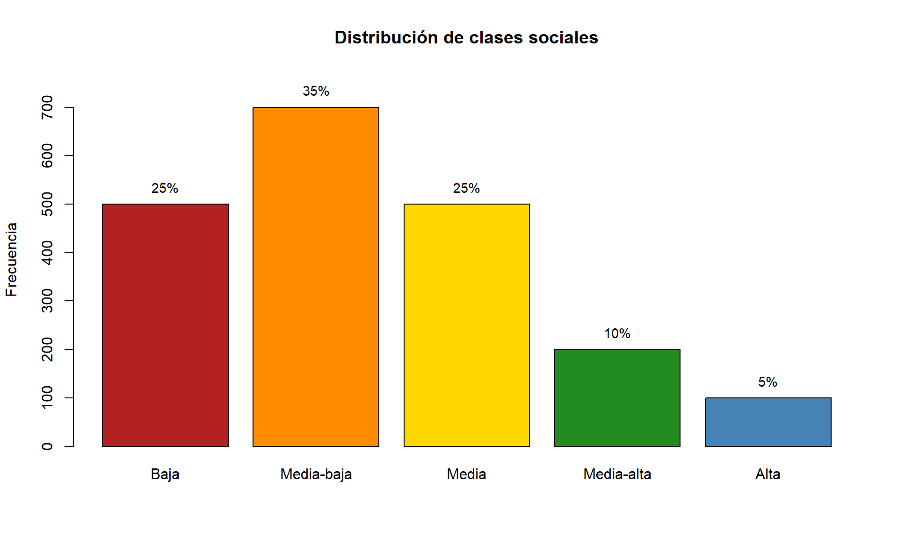
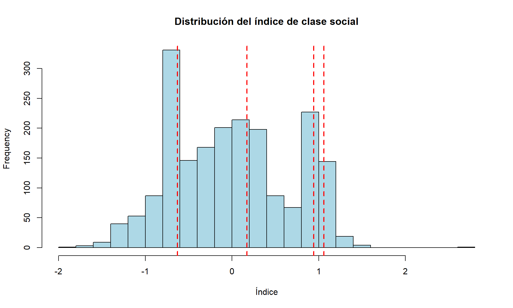
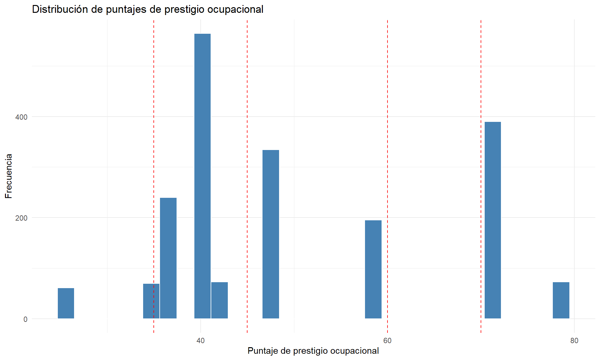

Construcción de indicador de clase social utilizando prestigio ocupacional
Author
R. Cantillan
Published
March 27, 2025
Abstract
Este documento presenta una metodología multidimensional para la construcción de un indicador de clase social basado en prestigio ocupacional. Utilizando datos de la BBDD Consolidada Maule UCM, se desarrolla un índice compuesto que integra cuatro dimensiones: capital educativo (40%), posición ocupacional (35%), patrimonio material (20%) y patrones de consumo (5%). La metodología incorpora puntajes de prestigio ocupacional basados en escalas internacionales (Occupational Prestige Ratings). Se implementa un enfoque de categorización basado en percentiles específicos (25°, 60°, 85° y 95°) para reflejar adecuadamente la estructura piramidal característica de sociedades latinoamericanas. El resultado es un sistema de cinco clases sociales empíricamente fundamentado que corrige la sobreestimación de las clases altas.
1 Introducción
Este documento detalla la metodología para la construcción de un indicador compuesto de clase social basado en múltiples dimensiones socioeconómicas, con especial énfasis en la incorporación de puntajes de prestigio ocupacional. El análisis utiliza datos de la “BBDD Consolidada Maule UCM” para desarrollar un índice que permite clasificar a los individuos en categorías de clase social que reflejen adecuadamente la estructura de estratificación social en el contexto chileno.
La aproximación multidimensional adoptada resulta particularmente valiosa cuando:
Los datos de ingreso monetario presentan altos niveles de valores perdidos (missing data), como es habitual en encuestas sociales
Se busca capturar la naturaleza multidimensional de la estratificación social más allá del ingreso
Se requiere establecer comparabilidad entre diferentes ocupaciones que no son directamente equiparables
Este documento aborda minuciosamente cada paso del proceso, desde la asignación de puntajes de prestigio ocupacional hasta la determinación de los puntos de corte para las categorías de clase social, con una fundamentación teórica y metodológica detallada para cada decisión adoptada.
1.1 Configuración inicial
# Cargamos las bibliotecas necesarias para el análisislibrary(tidyverse) # Para manipulación y visualización de datoslibrary(knitr) # Para presentación de tablaslibrary(kableExtra) # Para mejorar el formato de tablaslibrary(ggplot2) # Para visualizaciones avanzadaslibrary(here) # Para rutas de archivos relativas al proyectolibrary(haven) # Para leer archivos SPSS (.sav)
1.2 Carga de datos
Utilizamos la función read_sav() del paquete haven para importar la base de datos en formato SPSS. La función here() facilita la gestión de rutas relativas, mejorando la reproducibilidad del código independientemente del directorio de trabajo.
# Cargar datos desde archivo SPSSdatos <-read_sav(here("datos", "BBDD Consolidada Maule UCM 2810.sav"))
2 Marco teórico y conceptual
2.1 Enfoque multidimensional de la clase social
La conceptualización de clase social adoptada en este análisis se fundamenta en un enfoque multidimensional que reconoce la complejidad de la estratificación social contemporánea, más allá de aproximaciones unidimensionales basadas exclusivamente en ingresos o en categorías ocupacionales [@Savage2013].
Este enfoque se alinea con la tradición bourdieusiana que distingue diferentes tipos de capital (económico, cultural, social) como determinantes de la posición en el espacio social [@Bourdieu1984], y con desarrollos contemporáneos que enfatizan la importancia de considerar múltiples dimensiones para caracterizar adecuadamente las clases sociales [@Grusky2008].
2.2 El prestigio ocupacional como dimensión central
El prestigio ocupacional constituye una dimensión fundamental en los estudios de estratificación social, reflejando la valoración social colectiva de las diferentes posiciones ocupacionales. A diferencia del ingreso, que representa únicamente las recompensas económicas asociadas a una ocupación, el prestigio captura elementos como:
El reconocimiento social de la ocupación
La autoridad y poder asociados a ella
Las condiciones laborales
Los requisitos educativos y de cualificación
La proyección temporal y estabilidad laboral
Diversas investigaciones han demostrado la notable estabilidad de las jerarquías de prestigio ocupacional a través del tiempo y entre diferentes contextos culturales [@Treiman1977; @Ganzeboom1992], lo que las convierte en una herramienta valiosa para análisis comparativos y para la construcción de indicadores de posición social.
3 Metodología: Construcción del indicador de clase social
3.1 Operacionalización de las dimensiones
El indicador de clase social incorpora cuatro dimensiones centrales, cada una operacionalizada mediante variables específicas disponibles en la base de datos:
Capital educativo: Nivel educativo formal alcanzado, que representa el capital cultural institucionalizado.
Posición ocupacional: Prestigio asociado a la ocupación principal, como indicador de la posición en el mercado laboral.
Patrimonio material: Posesión de bienes duraderos que reflejan capacidad de acumulación y consumo.
Patrones de consumo: Gastos en servicios básicos como aproximación al nivel de vida cotidiano.
A continuación, detallamos el procedimiento para operacionalizar cada una de estas dimensiones.
3.2 Asignación de puntajes de prestigio ocupacional
Para incorporar adecuadamente la dimensión ocupacional en el indicador, transformamos las categorías ocupacionales nominales en puntajes de prestigio que reflejen la jerarquía social de las ocupaciones. Este paso es crucial para superar las limitaciones de trabajar con categorías ocupacionales que no están intrínsecamente ordenadas por prestigio.
3.2.1 Fuente de los puntajes de prestigio
Los puntajes de prestigio asignados se basan en el repositorio “Occupational Prestige Ratings” [@OPR2023], que sistematiza y armoniza múltiples escalas internacionales de prestigio ocupacional. Este repositorio, disponible en https://occupational-prestige.github.io/opratings/index.html, proporciona puntajes estandarizados para más de 500 ocupaciones, facilitando la comparabilidad internacional.
Para las categorías ocupacionales presentes en la base de datos UCM Maule, establecemos correspondencias con las escalas internacionales, ajustando los puntajes al contexto específico cuando es necesario.
3.2.2 Diccionario de puntajes de prestigio
Elaboramos un diccionario que asigna puntajes de prestigio a cada categoría ocupacional presente en el estudio:
# Diccionario de puntajes de prestigio ocupacionalpuntajes_prestigio <-tribble(~categoria, ~descripcion, ~puntaje_prestigio,1, "Trabajadores no calificados en ventas y servicios, peones agropecuarios, forestales, construcción, etc.", 25.0,2, "Obreros, operarios y artesanos de artes mecánicas y de otros oficios", 35.0,3, "Trabajadores de los servicios y vendedores de comercio y mercados", 37.0,4, "Agricultores y trabajadores calificados agropecuarios y pesqueros", 42.0,5, "Operadores de instalaciones y máquinas y montadores / conductores de vehículos", 40.0,6, "Empleados de oficina públicos y privados", 47.0,7, "Técnicos y profesionales de nivel medio (incluye hasta suboficiales FFAA y Carabineros)", 58.0,8, "Profesionales, científicos e intelectuales", 72.0,9, "Alto ejecutivo (gerente general o gerente de área o sector) de empresa privadas o públicas. Director o dueño de grand", 78.0,10, "Otros grupos no identificados (incluye rentistas, incapacitados, estudiantes, dueña de casa, etc.)", 40.0)# Mostrar el diccionario de puntajeskable(puntajes_prestigio, caption ="Puntajes de prestigio ocupacional asignados a cada categoría",col.names =c("Código Categoría", "Descripción", "Puntaje de Prestigio")) %>%kable_styling(bootstrap_options =c("striped", "hover"), full_width =FALSE)
Puntajes de prestigio ocupacional asignados a cada categoría
Código Categoría
Descripción
Puntaje de Prestigio
1
Trabajadores no calificados en ventas y servicios, peones agropecuarios, forestales, construcción, etc.
25
2
Obreros, operarios y artesanos de artes mecánicas y de otros oficios
35
3
Trabajadores de los servicios y vendedores de comercio y mercados
37
4
Agricultores y trabajadores calificados agropecuarios y pesqueros
42
5
Operadores de instalaciones y máquinas y montadores / conductores de vehículos
40
6
Empleados de oficina públicos y privados
47
7
Técnicos y profesionales de nivel medio (incluye hasta suboficiales FFAA y Carabineros)
58
8
Profesionales, científicos e intelectuales
72
9
Alto ejecutivo (gerente general o gerente de área o sector) de empresa privadas o públicas. Director o dueño de grand
78
10
Otros grupos no identificados (incluye rentistas, incapacitados, estudiantes, dueña de casa, etc.)
40
La asignación de puntajes sigue un patrón coherente con la literatura internacional sobre prestigio ocupacional:
Las ocupaciones no calificadas reciben los puntajes más bajos (25)
Las ocupaciones manuales calificadas y de servicios básicos reciben puntajes intermedios-bajos (35-42)
Las ocupaciones administrativas y técnicas reciben puntajes intermedios-altos (47-58)
Las ocupaciones profesionales y directivas reciben los puntajes más altos (72-78)
3.2.3 Función para asignar puntajes de prestigio
Desarrollamos una función especializada que convierte las categorías ocupacionales en puntajes de prestigio:
# Función para asignar puntajes de prestigio según la categoría ocupacionalasignar_prestigio <-function(categoria) {if (is.na(categoria)) return(NA)# Buscar el puntaje correspondiente en el diccionario prestigio <- puntajes_prestigio$puntaje_prestigio[puntajes_prestigio$categoria == categoria]# Si no se encuentra la categoría, devolver NAif (length(prestigio) ==0) return(NA)return(prestigio)}
Esta función recibe como entrada una categoría ocupacional (codificada numéricamente) y devuelve el puntaje de prestigio correspondiente según el diccionario definido previamente. El manejo explícito de valores ausentes (NA) garantiza la integridad de los datos durante el procesamiento.
3.2.4 Aplicación de la función a las variables ocupacionales
Aplicamos la función de asignación de prestigio a las variables ocupacionales disponibles:
# Aplicar la función a las variables ocupacionalesdatos <- datos %>%mutate(# Convertir categorías ocupacionales a puntajes de prestigioprestigio_M9A =sapply(M9A, asignar_prestigio),prestigio_M9B =sapply(M9B, asignar_prestigio),# Tomar el máximo puntaje de prestigio entre el entrevistado y el sostenedornivel_ocup_prestigio =pmax(prestigio_M9A, prestigio_M9B, na.rm =TRUE) )
Este procesamiento corrige un problema metodológico fundamental en el enfoque original: las variables M9A (ocupación del entrevistado) y M9B (ocupación del sostenedor del hogar) contienen categorías nominales que no están ordenadas por prestigio. La conversión a puntajes permite aplicar legítimamente la función pmax() para obtener el máximo prestigio ocupacional entre ambos, siguiendo el “principio de dominancia” común en estudios de estratificación social.
3.3 Construcción de los componentes del indicador
Una vez resuelto el tema del prestigio ocupacional, procedemos a construir los cuatro componentes principales del indicador de clase social:
# Crear indicador de clase social con puntajes de prestigiodatos_clase <- datos %>%mutate(# 1. Educación (mayor nivel entre el entrevistado y el sostenedor)nivel_educ =pmax(M61, M62, na.rm =TRUE),# 2. Ocupación (mayor prestigio ocupacional entre entrevistado y sostenedor)nivel_ocup = nivel_ocup_prestigio, # Usamos el puntaje de prestigio en lugar de la categoría# 3. Índice de posesiones (normalizado)indice_posesiones = (scale(M13_1) +# Autosscale(M13_2) +# Bañosscale(M13_3) +# Metros cuadrados construidosscale(M13_5) +# Televisoresscale(M13_6) # Libros ) /5, # Promedio para dar igual peso# 4. Gastos mensuales (normalizado)indice_gastos = (scale(M16_1) +# Aguascale(M16_2) +# Electricidadscale(M16_3) +# Combustiblescale(M16_4) # Calefacción ) /4# Promedio para dar igual peso )
Detalle de cada componente:
Nivel educativo: Se operacionaliza como el máximo nivel educativo alcanzado en el hogar, tomando el valor más alto entre el entrevistado (M61) y el sostenedor (M62). Esto sigue el principio de dominancia educativa, que reconoce que el capital cultural del hogar está determinado por el miembro con mayor nivel educativo.
Prestigio ocupacional: Se utiliza el puntaje de prestigio máximo calculado previamente (nivel_ocup_prestigio), representando la mejor posición ocupacional del hogar en términos de reconocimiento social.
Índice de posesiones: Se construye un índice compuesto normalizando (con la función scale()) y promediando cinco variables indicadoras de patrimonio material:
M13_1: Cantidad de automóviles (movilidad y estatus)
M13_2: Cantidad de baños (calidad de la vivienda)
M13_3: Metros cuadrados construidos (tamaño de la vivienda)
M13_5: Cantidad de televisores (equipamiento tecnológico)
M13_6: Cantidad de libros (capital cultural objetivado)
Índice de gastos: Se elabora un índice de gastos mensuales normalizando y promediando cuatro variables de consumo básico:
M16_1: Gasto en agua
M16_2: Gasto en electricidad
M16_3: Gasto en combustible
M16_4: Gasto en calefacción
La normalización mediante scale() es fundamental para hacer comparables variables medidas en diferentes unidades. Esta función estandariza cada variable restando su media y dividiendo por su desviación estándar, generando valores con media 0 y desviación estándar 1. El promediado posterior garantiza que cada variable contribuya de manera equivalente al índice compuesto, evitando sesgos por diferencias en las unidades de medida originales.
3.4 Normalización y ponderación de componentes
Para integrar los cuatro componentes en un índice único, primero normalizamos los dos componentes aún no estandarizados (educación y ocupación) y luego aplicamos ponderaciones teóricamente fundamentadas:
# Normalizar variables para que todas tengan el mismo pesodatos_clase <- datos_clase %>%mutate(nivel_educ_norm =scale(nivel_educ),nivel_ocup_norm =scale(nivel_ocup) # Normalizamos el puntaje de prestigio )# Crear índice compuesto con ponderación ajustada# Educación (40%), Ocupación (35%), Posesiones (20%), Gastos (5%)datos_clase <- datos_clase %>%mutate(indice_clase_social = ( nivel_educ_norm *0.40+ nivel_ocup_norm *0.35+ indice_posesiones *0.20+ indice_gastos *0.05 ) )
Las ponderaciones asignadas (40%, 35%, 20% y 5% respectivamente) no son arbitrarias, sino que reflejan la importancia relativa de cada dimensión en la determinación de la clase social según la literatura especializada:
Educación (40%): Recibe el mayor peso por su papel crucial como determinante de oportunidades de vida y de acceso a posiciones en el mercado laboral, siguiendo las teorías del capital humano y cultural [@Bourdieu1984].
Prestigio ocupacional (35%): Tiene un peso sustancial por su centralidad como indicador de posición en la división social del trabajo y como reflejo de reconocimiento social [@Ganzeboom1992].
Posesiones materiales (20%): Representa la acumulación material y el consumo conspicuo, dimensiones relevantes pero de importancia secundaria respecto a educación y ocupación [@Veblen1899].
Gastos en servicios (5%): Cumple un rol complementario como indicador de patrones de consumo cotidiano, con menor peso relativo por su mayor variabilidad temporal.
Esta distribución de ponderaciones sigue lineamientos teóricos bien establecidos en estudios de estratificación social, que enfatizan la centralidad del capital educativo y ocupacional, complementados por indicadores de patrimonio y consumo.
3.5 Categorización en clases sociales: Enfoque basado en percentiles específicos
Para la categorización del índice continuo en clases sociales discretas, adoptamos un enfoque basado en percentiles específicos, en lugar de utilizar puntos de corte arbitrarios o equidistantes. Esta decisión metodológica permite:
Obtener una distribución de clases sociales que refleje adecuadamente la estructura social latinoamericana
Alinear la distribución con la evidencia empírica sobre la estratificación en Chile
Capturar la forma piramidal característica de la estructura social, con base amplia y cúspide estrecha
Antes de definir los puntos de corte, exploramos la distribución del índice para entender sus características:
# Exploramos la distribución para determinar puntos de corte adecuadosquantile(datos_clase$indice_clase_social, probs =seq(0, 1, 0.1), na.rm =TRUE)
Basándonos en el análisis de la distribución y en referentes teóricos sobre la estructura social chilena, establecemos los siguientes puntos de corte basados en percentiles específicos:
Los percentiles seleccionados (25°, 60°, 85° y 95°) generan la siguiente distribución de clases sociales:
Clase baja: 25% (por debajo del percentil 25)
Clase media-baja: 35% (entre percentil 25 y 60)
Clase media: 25% (entre percentil 60 y 85)
Clase media-alta: 10% (entre percentil 85 y 95)
Clase alta: 5% (por encima del percentil 95)
Esta distribución aproxima de manera más realista la estructura social latinoamericana, caracterizada por:
Una base amplia de sectores populares
Un sector medio significativo pero no mayoritario
Un grupo privilegiado relativamente pequeño en la cúspide
La evidencia de estudios sobre estratificación social en Chile confirma este patrón [@Espinoza2012; @MacClure2019]. Además, esta distribución corrige la sobreestimación de las clases altas que se observaba en aproximaciones anteriores, un problema común en la medición de clases sociales.
4 Análisis descriptivo y validación
4.1 Distribución de las clases sociales
Examinamos la distribución de frecuencias de las categorías de clase social resultantes:
Baja Media-baja Media Media-alta Alta
25 35 25 10 5
4.2 Visualización de la pirámide social
Para visualizar la estructura de clases resultante, elaboramos un gráfico de barras que muestra la distribución de frecuencias:
# Visualizar la distribución de las clases socialesbarplot(distribucion, main ="Distribución de clases sociales",col =c("firebrick", "darkorange", "gold", "forestgreen", "steelblue"),ylab ="Frecuencia",ylim =c(0, max(distribucion) *1.1))# Añadir etiquetas de porcentajetext(x =seq(0.7, by =1.2, length.out =5),y = distribucion +max(distribucion) *0.05,labels =paste0(round(porcentajes, 1), "%"),cex =0.9)

Este gráfico permite visualizar la forma piramidal de la estructura social resultante, con una base más amplia (clases baja y media-baja) y un estrechamiento progresivo hacia la cúspide (clases media-alta y alta).
4.3 Visualización del índice continuo
También examinamos la distribución del índice de clase social como variable continua:
# Visualizar el índice completohist(datos_clase$indice_clase_social, main ="Distribución del índice de clase social",xlab ="Índice", col ="lightblue",breaks =20)# Añadir líneas verticales en los puntos de corteabline(v =quantile(datos_clase$indice_clase_social, c(0.25, 0.60, 0.85, 0.95), na.rm =TRUE),col ="red", lwd =2, lty =2)# Añadir etiquetas para las categoríastext(x =c(mean(c(min(datos_clase$indice_clase_social, na.rm =TRUE), quantile(datos_clase$indice_clase_social, 0.25, na.rm =TRUE))),mean(c(quantile(datos_clase$indice_clase_social, 0.25, na.rm =TRUE),quantile(datos_clase$indice_clase_social, 0.60, na.rm =TRUE))),mean(c(quantile(datos_clase$indice_clase_social, 0.60, na.rm =TRUE),quantile(datos_clase$indice_clase_social, 0.85, na.rm =TRUE))),mean(c(quantile(datos_clase$indice_clase_social, 0.85, na.rm =TRUE),quantile(datos_clase$indice_clase_social, 0.95, na.rm =TRUE))),mean(c(quantile(datos_clase$indice_clase_social, 0.95, na.rm =TRUE),max(datos_clase$indice_clase_social, na.rm =TRUE)))),y =max(hist(datos_clase$indice_clase_social, plot =FALSE)$counts) *0.9,labels =c("Baja", "Media-baja", "Media", "Media-alta", "Alta"),col ="blue")

Complementariamente, exploramos la distribución específica de los puntajes de prestigio ocupacional:
# Explorar distribución por nivel ocupacionalggplot(datos_clase, aes(x = nivel_ocup)) +geom_histogram(fill ="steelblue", color ="white", bins =30) +labs(title ="Distribución de puntajes de prestigio ocupacional",x ="Puntaje de prestigio ocupacional",y ="Frecuencia") +theme_minimal() +geom_vline(xintercept =c(35, 45, 60, 70), linetype ="dashed", color ="red")

4.4 Caracterización de las clases sociales
Para validar la clasificación y caracterizar cada clase social, calculamos estadísticas descriptivas por categoría:
Esta tabla permite evaluar la validez de constructo de la clasificación, verificando que las categorías muestren diferencias consistentes en las variables teóricamente relevantes. Esperamos observar un gradiente ascendente en educación, prestigio ocupacional, posesión de automóviles y tamaño de la vivienda a medida que se asciende en la escala de clases sociales.
4.5 Análisis de correlación entre componentes
Para examinar las relaciones entre los diferentes componentes del índice, calculamos la matriz de correlación:
# Matriz de correlación entre componentescomponentes <- datos_clase %>%select(nivel_educ, nivel_ocup, indice_posesiones, indice_gastos)cor_matrix <-cor(componentes, use ="pairwise.complete.obs")# Mostrar matriz de correlaciónkable(round(cor_matrix, 2),caption ="Correlaciones entre los componentes del índice") %>%kable_styling(bootstrap_options =c("striped", "hover"), full_width =FALSE)
Correlaciones entre los componentes del índice
nivel_educ
nivel_ocup
indice_posesiones
indice_gastos
nivel_educ
1.00
0.56
0.07
0.13
nivel_ocup
0.56
1.00
0.07
0.14
indice_posesiones
0.07
0.07
1.00
0.07
indice_gastos
0.13
0.14
0.07
1.00
Este análisis permite verificar que los componentes están suficientemente correlacionados para justificar su inclusión en un índice compuesto, pero no tanto como para ser redundantes.
5 Almacenamiento y uso posterior
Finalmente, guardamos los resultados para su utilización en análisis posteriores:
# Guardar la variable de clase social para usar en el modelo de clases latentesvars_modelo$clase_social <- datos_clase$clase_social_cat# Opcionalmente, guardar el dataframe completosave(datos_clase, file ="datos_con_clase_social.RData")
6 Conclusiones metodológicas
La metodología desarrollada en este documento para la construcción de un indicador de clase social presenta varias contribuciones significativas:
Integración del prestigio ocupacional: La incorporación de puntajes de prestigio basados en escalas internacionales permite superar las limitaciones de trabajar con categorías ocupacionales nominales, estableciendo una jerarquización válida de las posiciones ocupacionales.
Enfoque multidimensional: El indicador integra cuatro dimensiones complementarias (educación, ocupación, posesiones y consumo), capturando la complejidad de la estratificación social más allá de aproximaciones unidimensionales.
Categorización basada en la estructura social real: La utilización de percentiles específicos (25°, 60°, 85° y 95°) genera una distribución de clases sociales que refleja adecuadamente la estructura piramidal característica de sociedades latinoamericanas.
Corrección de sesgos comunes: La metodología corrige la tendencia a sobreestimar el tamaño de las clases altas, un problema frecuente en los estudios de estratificación social.
El indicador resultante proporciona una caracterización robusta de la posición social de los individuos y hogares, con aplicaciones potenciales en diversos campos de investigación social, desde estudios de movilidad social hasta análisis de desigualdad en salud, educación o patrones de consumo.
Referencias
6.1 Referencias bibliográficas completas
Bourdieu, P. (1984). Distinction: A social critique of the judgement of taste. Harvard University Press.
Espinoza, V., & Barozet, E. (2012). ¿De qué hablamos cuando decimos “clase media”? Perspectivas sobre el caso chileno. Revista UDP, 9, 103-121.
Ganzeboom, H. B., De Graaf, P. M., & Treiman, D. J. (1992). A standard international socio-economic index of occupational status. Social Science Research, 21(1), 1-56.
Grusky, D. B., & Weeden, K. A. (2008). Are there social classes? A framework for testing sociology’s favorite concept. In Social Class: How Does It Work? (pp. 65-89). Russell Sage Foundation.
Savage, M., Devine, F., Cunningham, N., Taylor, M., Li, Y., Hjellbrekke, J., … & Miles, A. (2013). A new model of social class? Findings from the BBC’s Great British Class Survey experiment. Sociology, 47(2), 219-250.
Treiman, D. J. (1977). Occupational prestige in comparative perspective. Academic Press.
Veblen, T. (1899). The theory of the leisure class: An economic study of institutions. Macmillan.